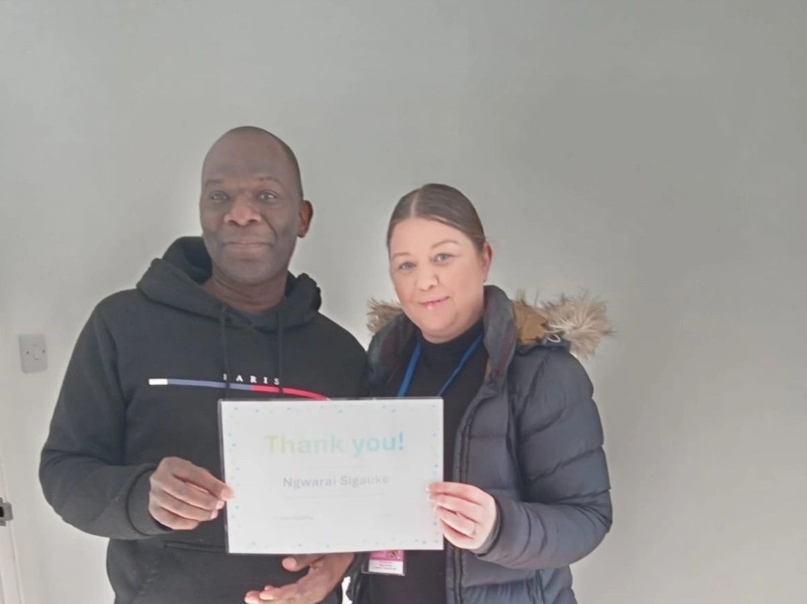
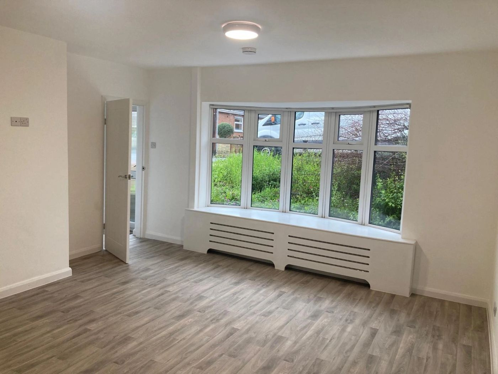

What has been happening at Obsidian Supported Living — our people, our training and the homes we create.
For the team to confirm
These stories are carried over from the previous website and expanded. The wording is ready to publish; please confirm the dates marked [CONFIRM date] and add real photographs in place of the placeholders before this page goes live.
· Our people
Dawn Newby shortlisted at the 2025 Proud to Care Awards
Photo placeholderA photograph of Dawn would go here.
Our Registered Manager, Dawn Newby, has been named a finalist in the Long Service Recognition category at the 2025 Proud to Care Awards, which celebrate the people who work in social care across the region.
The recognition reflects a career of more than twenty-five years in social care. Dawn began as a support worker and has since worked in almost every role in the structure — support worker, Registered Manager, Operations Manager and Business Improvement Manager — before leading the service at Obsidian. She is also an accredited trainer, and delivers much of the training our own staff receive.
Long service in this sector is not a given. People stay when they are supported, trusted and led by someone who has done the job themselves. Dawn’s shortlisting is recognition of exactly that, and everyone at Obsidian is proud to see it.
· Our team
What our team told us in this year’s staff survey
Every year we ask the people who work here what it is really like to work at Obsidian — and we listen to the answers. This year’s feedback pointed to the same thing again and again: the team, and the way people look out for one another.
“I enjoy working as part of the Obsidian team because of the supportive environment, great team spirit and shared goals.”
The same team member told us they valued that managers understand the importance of work–life balance — something that is easy to say and harder to mean.
“Everyone at Obsidian are approachable, professional and committed to doing their best, which creates a positive and motivating work environment.”
We share these results because the quality of support people receive is inseparable from how the people delivering it are treated. Our RICH values — respect, integrity, compassion and honesty — are written to apply to our staff as much as to the people we support, and this is where that shows.
· Our people
Ngwarai voted Employee of the Month

Ngwarai Sigauke with his Employee of the Month certificate.
Our Employee of the Month is chosen by colleagues, not by managers — which is what makes it worth having. This time the team chose Ngwarai, one of our support workers.
Ngwarai was recognised for being, in his colleagues’ words, “kind and welcoming to all staff, especially those new to our team,” and for going “the extra mile for those around him.” New starters in care remember the people who made them feel welcome in their first few weeks; being that person for others is quietly one of the most valuable things anyone on the team can do.
Congratulations, Ngwarai — and thank you.
· Training [CONFIRM date]
Our training is now delivered in-house
We have invested in our own accredited trainers, so that more of the training our staff receive is delivered inside Obsidian rather than bought in as an online tick-box. Our team is now qualified to deliver training in:
personal safety interventions for behaviour that may challenge;
CPR, choking response, first aid and the safe use of a defibrillator;
moving and handling;
epilepsy awareness and the safe administration of buccal medication.
Training that is delivered in-house can be shaped around the people we actually support, kept current, and refreshed quickly when someone’s needs change. For the people who rely on us, it means the staff around them are trained for their situation — not for a generic one.
· Property [CONFIRM date]
A new accessible bungalow in Nottinghamshire

The refurbished lounge, with its bay window onto the garden. See the full before-and-after on our Property Solutions page.
We have completed the refurbishment of a two-bedroom detached bungalow in Nottinghamshire, available for single or shared occupancy. It has been adapted from the ground up for people with complex needs: a wheelchair-accessible layout, a bespoke wet room, wipe-clean flooring throughout, lowered work surfaces and widened doorways.
The bungalow is an example of how we approach housing. Working with our housing partner, Beacon Supported Housing CIC, we source and adapt homes around the person who will live in them — with the tenancy always kept separate from the support we provide. You can see the before-and-after of this refurbishment, and read how we work, on our Property Solutions page.